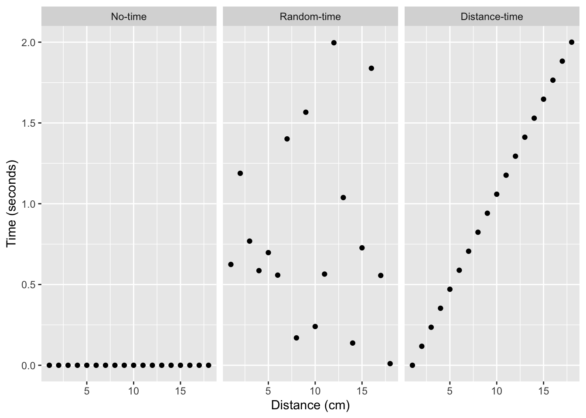

2 Mental Imagery
Abstract
This chapter discusses historical and current research on mental imagery. Overarching questions include: What is mental imagery and how does it work? What kind of explanation would answer this question? How did prior researchers tackle these questions, and what has been learned about mental imagery? And, how has society been influenced by research into mental imagery? Two major topics include individual differences in mental imagery and the mental imagery debate.
2.1 What is mental imagery?
Mental imagery is the subjective experience of being in your own mind, particularly when using your imagination. Can you envision a picture, scene, or movie in your “mind’s eye”? If so, how would you describe the quality of the mental image? Is it vivid and lifelike? If not, what is your experience when using your imagination?
When I close my eyes, I have limited visualization ability. I can imagine visual scenes, especially familiar places like my kitchen. My imagery seems to be more spatial than visual, as I can feel the layout of the scene more easily than seeing visual features of the mental picture. Occasionally, my mental imagery is vivid and lifelike, particularly in dreams that can appear just as compelling as real life. So, according to me, my mental imagery ranges from fairly fuzzy to occasionally extremely vivid and lifelike.
The next section reviews evidence that people report a wide range of mental imagery abilities. For example, some people report the ability to effortlessly visualize extremely clear and vivid lifelike images. Some people report medium visualizing ability, whereas others report having very little to no mental imagery.
2.2 Generating facts about mental imagery
Answering questions about mental imagery requires establishing facts about the phenomena that we can trust and collectively agree upon. However, the subjective aspects of mental imagery present difficulties for objectively measurement. Nevertheless, the literature contains methods and findings relevant to mental imagery phenomena, and because of the subjective nature of the topic, some skepticism is required for evaluating research results. We begin with the method of introspection.
2.2.1 Methods of Introspection and Subjective report
The method of introspection involves self-reflection upon or scrutinizing aspects of your own cognition. For example, I used introspection to think about my own mental imagery experience in the previous section. Similarly, I used the method of subjective report to describe my experiences using a short paragraph. As a historical side note, introspection was used as a technique to generate knowledge about the mind by early German psychologist Wilhem Wundt (1832-1920) and American psychologist Edward Titchener (1867-1927) who developed the structuralism school of psychology. Methods of subjective report remain very common today, often in the form of questionnaires that ask people to make various subjective judgments. Before considering the limitations of introspection and subjective report, let’s see a concrete example from the beginning of mental imagery research.
2.2.2 Galton’s Statistics of mental imagery

Sir Francis Galton (1822-1911) was a British psychologist who was one of the first to systematically study mental imagery. To quote from his 1880 paper titled, Statistics of mental imagery (Galton, 1880), Galton set out to:
“define the different degrees of vividness with which different persons have the faculty of recalling familiar scenes under the form of mental pictures, and the peculiarities of the mental visions of different persons” .
The next section reviews Galton’s methods and major findings. His original manuscript is freely available from archive.org.
2.2.2.1 Galton’s Method of Subjective Report
Galton devised the “Breakfast Table Task” which involved a series of structured questions about mental imagery. He sent letters to 100 people asking them to reply with answers to his questions. The questions are reprinted below:
2.2.2.2 Galton’s results
Here are some of the answers from “100 men, at least half of whom are distinguished in science or in other fields of intellectual work.” (reprinted from his original manuscript):
2.2.2.3 Galton’s conclusion
Galton’s major conclusion and potential discovery was evidence for a wide variety of individual differences in mental imagery. Some people reported having very strong powers of mental visualization, while others reported having moderate abilities, and still, others reported having no abilities to visualize anything in their mind’s eye at all.
If Galton’s results provide reliable facts, then explaining mental imagery becomes more challenging. Not only do we need to explain how individuals create mental images, but we also need to account for why some individuals can vividly create these images while others cannot. This illustrates the growing complexity that follows the research cycle. Every question answered leads to new facts, which in turn result in new questions requiring thorough explanation.
2.2.2.4 Limitations with Galton’s method
Galton’s methods were straightforward. He wanted to know how different people experienced mental imagery, so he asked them to think about it and tell him. Although introspection and subjective report were good starting points they also have shortcomings that could invalidate the results. Consider the following limitations: Galton’s participants could have lied about their mental imagery. Their statements could reflect fictional stories rather than facts about mental imagery abilities. The participants may have inaccurately described their own experiences. For example, descriptions could be exaggerated or contain mistaken impressions. People may use different words that suggest larger differences in mental imagery than actually exist.
Establishing facts about mental imagery is challenging because the subjective experience of a person’s own mental imagery cannot be directly observed by others. In other fields of study, direct observation can help to establish a collective set of agreed-upon facts. For instance, a group of geologists can all observe and point to a rock formation, concur that it exists, and then analyze and measure it to gather additional directly observable information. Galton’s subjective report technique does include some observable measurements, such as the words utilized by people to depict their mental imagery. However, people’s verbal responses are an indirect attempt to communicate an experience and do not supply an objective perspective that other observers can use to witness the experience itself.
Obtaining objective facts about subjective experience is undoubtedly a challenge, but there are tools developed since Galton’s to help make progress on these issues. One common requirement for establishing facts is to show that they are reproducible. In psychological research, a reproducible finding is one that reliably occurs when an exact or conceptually similar study is repeated by other researchers. The next section examines the reproducibility of Galton’s core claims and findings.
2.2.3 Reproducing Galton’s mental imagery work
Galton conducted his work in the United Kingdom throughout the last half of the 1800s, and like some of his other ideas (that we will discuss in the next chapter), they spread among psychologists in other countries. At the turn of the century, American psychologists were busy using Galton’s methods and publishing on the mental imagery abilities of college students. For example, in 1896, Armstrong (1894) gave the “Breakfast Table Task” to students at Wesleyan University (a male college). The general pattern of results was similar to what Galton found. The students reported a wide range of mental imagery abilities, including a small proportion of students who were classified as having little to no visual imagery.
In 1902, French (1902) asked students at Vassar College (a women’s college) about their mental imagery abilities using a longer mental imagery questionnaire created by Titchener (1905), that was intended to improve upon Galton’s original questions. The results were mostly consistent with prior findings: the Vassar students reported a wide range of mental imagery abilities. However, one finding was not replicated: all 118 students reported having mental imagery abilities, and none claimed to have none. This could mean that all of the students happened to possess mental imagery abilities, or it could raise doubts about the claim that some people do not have mental imagery. One possibility is that the results depend on the questionnaire used. Galton had 10 questions on mental imagery, while Titchener had almost 90 questions that extended to other senses, and which could have given students additional opportunities to admit that they had at least some mental imagery. Perhaps, if Galton and Armstrong had used Titchener’s new questionnaire, they too might have found all of their participants reporting at least some mental imagery ability.
2.2.4 Aphantasia and Hyperphantasia
Let’s skip over a century and ask what recent research on mental imagery looks like. In 2010, Zeman and colleagues reported a case of a patient with “imagery generation disorder” (A. Z. Zeman et al., 2010) that was picked up by the media. Several people who heard about the finding contacted the researchers to let them know that they also did not experience visual imagery. This led the research group to begin examining these claims in more detail and in 2015 (A. Zeman et al., 2015), they did something very similar to what Galton did; namely, ask people questions about the vividness of their mental imagery. They used a newer questionnaire developed to assess the vividness of visual imagery (Marks, 1973) and gave it to the people who claimed they had no visual imagery. Perhaps not surprisingly, those same people gave answers to the questionnaire that were consistent with their claims that they had visual imagery. Zeman coined the term (aphantasia)[#gls-aphantasia] to describe the condition of having little to no mental imagery.
The media attention to Zeman’s work on aphantasia caused a great deal of interest across the world. One of the research participants in the 2015 study created the Aphantasia Network website, which has grown into a large online community for people with aphantasia. By 2020 (A. Zeman et al., 2020), Zeman’s group had been contacted by 14,000 people who claimed they either had aphantasia, or the opposite – extremely vivid and life-like mental imagery, termed hyperphantasia. Some of the claims are quite extraordinary. For example, in a 2021 New York Times article (Zimmer, 2021), cognitive neuroscientist Joel Pearson claimed that ‘hyperphantasia could go far beyond just having an active imagination…and that “People [with hyperphantasia] watch a movie, and then they can watch it again in their mind, and it’s indistinguishable.”’.
I can’t accurately replay a whole movie in my head: that is pretty incredible. To me, this claim is so incredible that I wonder if the person was exaggerating their ability a little. Although I am skeptical, there is no shortage of people accomplishing astounding, and objectively verifiable feats of cognition. Daniel Tammet (“Daniel Tammet,” 2021) is famous for breaking the European record for correctly reciting from memory the first 22,514 digits of the number pi. So, if Daniel Tammet can accurately “replay” the digits of pi for five hours, maybe someone else can replay a whole movie in their mind. Again, the role of direct observation comes into play for lending support to an extraordinary claim. The fact that Daniel could say the digits of pi out loud for other observers to hear, under controlled conditions (where those observers could verify he wasn’t cheating somehow), makes it easier to believe that Daniel’s ability is real. Similarly, if there were more direct methods to test claims about extreme differences in mental imagery abilities, this would lend more support to those extraordinary claims.
2.2.5 Taking stock of the facts so far
We have just surveyed a few examples of research into mental imagery abilities. These examples were chosen to highlight some of the challenges with establishing facts about cognitive abilities. I deliberately chose a tough example like mental imagery, where it is inherently difficult to obtain clear, objective facts that everyone can agree upon. Therefore, before we consider an example of theorizing about mental imagery and the larger task of explaining how an ability like mental imagery works, let’s consider the kinds of facts we have so far and the role they play in the research cycle.
I consider the work reviewed so far as preliminary exploratory research that was on a fact-finding mission. From Galton to Zeman, the questionnaires have been developed to ask “what” questions, rather than “how” questions. Of course, it is useful to establish facts about “what mental imagery is like” before developing and testing theories about “how mental imagery works”.
What facts about mental imagery can we say have been established by the research? First, reasonable people can have different answers to this question, which adds complexity to explaining cognitive abilities like mental imagery. To give my perspective, I’ll list a few questions about mental imagery, and discuss what kind of evidence we have for the facts.
Is mental imagery a real cognitive ability? Are there individual differences in mental imagery abilities? Do some people really have zero mental imagery abilities? Do some people have truly lifelike mental imagery?
The research we reviewed all used introspection and subjective report methods (questionnaires) to ask people questions about their own subjective experiences of mental imagery. These methods have limitations, as we discussed previously. People might be lying, inaccurate, inattentive, unable to describe their own experience or describe similar experiences differently. As a consequence, the quality of the results is limited by the quality of the measurement tool. We cannot claim that the questionnaire data provides clear, objective facts about a person’s internal subjective experience of mental imagery. However, we can agree that the research has produced some objective facts about how people describe their own mental imagery. Across centuries and thousands of participants, people consistently claim that mental imagery is real to them, and similar proportions of people consistently claim that they have different kinds of mental imagery abilities. So, if you were to make your own questionnaire to ask random people on the street about their mental imagery abilities, what do you think would happen given the existing research we discussed? My prediction would be that you would find the same kinds of results that Galton did in 1880 and Zeman did in the 2010s.
Some takeaways from reviewing this literature are clear: asking people about their own experience proves useful, as they usually make consistent claims about mental imagery and provide subjective evidence of its features. Despite this, there are limitations posed by subjective reports, thus suggesting the need for alternative tools to more objectively measure different aspects of mental imagery.
2.3 Theories, explanation and mental imagery
The cognitive sciences are not only concerned with discovering the facts about cognitive abilities such as mental imagery, but are also interested in explaining how these abilities work. Explanations can take different forms, and throughout the textbook we will encounter relatively simple claims about how something might work, as well as well-developed verbal theories and highly specified computer simulations proposing working algorithms for specific cognitive abilities. Throughout, I will encourage us to keep wondering about what kind of explanation would be satisfying when trying to explain how different cognitive abilities work.
Currently, there is no widely accepted theory explaining how mental imagery works. As we previously mentioned, even the features of mental imagery lack a strong consensus, which is why the absence of a theory is not unexpected. However, there has been considerable theoretical debate concerning mental imagery, which offers a valuable example of how theories and explanations are used in cognitive research.
2.3.1 Mental Imagery as explanation
In the previous section, I discussed the omission of approximately one hundred years of research in mental imagery. During this period, there were general movements in psychology that influenced how researchers posed questions about it. Gradual transitions occurred between different schools of thought that affected inquiry methods. At the beginning of psychology in the USA, Titchener (1867-1927) developed Structuralism. This school of thought utilized introspection techniques to carefully, albeit subjectively, investigate and distinguish individual components of cognitive processes. In contrast, Behaviorism emphasized asking questions that only objective measures of behavior could answer. Some “hard-core” behaviorists, such as B.F. Skinner (1904-1990), argued that psychology should only study observable phenomena like behavior, and internal processes of the mind should not be subject to scientific inquiry. As a result, research on topics like mental imagery received little attention from most behaviorists. However, in the 1950s, 60s, and 70s, there was a “cognitive revolution” of sorts, and more psychologists returned to asking questions about cognitive abilities, including mental imagery.
When mental imagery resurfaced as a research topic, it presented itself as a potential explanation for other cognitive abilities. In the 1960s, there was a substantial amount of literature on human memory abilities, which was focused on evaluating the factors that impact how well people can remember verbal stimuli like words. In 1963, Allan Paivio (1963) entertained the idea that mental imagery could play a role in tasks where individuals attempt to recollect words from a list. He proposed that having a vivid mental image when reading a word could enhance the likelihood of remembering it later. Conversely, other words that did not evoke such strong mental imagery could be more challenging to recall later. Paivio also conducted some experimental research that corroborated the notion that mental imagery is integral to memory abilities.
2.3.2 Paivio’s concrete versus abstract memory task
Paivio conducted a paired-associate learning task which involved running experiments on both elementary and college students. The results obtained from both groups were similar. If you were a participant in the experiment, here’s what occurred.
Participants in the experiment were given pairs of words to remember for a memory test. The word pairs consisted of an adjective and a noun, such as “Ingenious-Inventor”. It’s important to note that there were two types of word pairs: those with a concrete noun and those with an abstract noun. This difference in noun type was a critical aspect of the experiment’s manipulation. Below are some examples of the two types of word pairs.
| Concrete pairs | Abstract Pairs |
|---|---|
| Ingenious-Inventor | Ingenious-Interpretation |
| Technical-Advertisement | Technical-Discourse |
| Massive-Granite | Massive-Rebellion |
| Subtle-Magician | Subtle-Prejudice |
| Profound-Philosopher | Profound-Analysis |
| Rugged-Arctic | Rugged-Locality |
| Shabby-Hermit | Shabby-Client |
| Clumsy-Burglar | Clumsy-Imitation |
| Unpleasant-Bruise | Unpleasant-Scandal |
| Sensitive-Lungs | Sensitive-Tissue |
| Colourful-Maple | Colourful-Scenery |
| Reliable-Luggage | Reliable-Merchandize |
| Expressive-Actress | Expressive-Temperament |
| Amazing-Circus | Amazing-Crusade |
| Noisy-Trumpet | Noisy-Gossip |
| Fashionable-Overcoat | Fashionable-Apparel |
What makes a noun more concrete or abstract? The general idea was that concrete words are potentially more evocative, meaningful, and easier to mentally image than abstract words. For example, hearing or reading the word “Magician” might cause you to think of a colorful magician’s hat, whereas the word “Discourse” might not bring to mind specific mental images. Paivio chose the words that he considered more concrete and more abstract when constructing the lists for his experiment. As a caveat, it is totally possible that one person might find a specific word more concrete, and another person would experience the same word as more abstract.
During the encoding phase, the experimenter read lists of 16 word pairs out loud, with a two-second pause in between. Half of the word pairs had a concrete noun, and the other half had an abstract noun. During the memory test, the experimenter read out only the first word from each pair (the adjective), and participants were asked to remember the word it was paired with and write it down. If you heard the word “Amazing” and you were given the concrete pair, then the correct answer would be to write down “Circus”. If you were given the abstract pair, then the correct answer would be “Crusade”.
Paivio’s study examined whether people remember concrete nouns better than abstract nouns. The study’s empirical question was answered as Paivio found that this was indeed the case. In the second experiment, participants correctly recalled 4.5 concrete nouns on average, while they only recalled 2 abstract nouns correctly. Although the difference was only 2.5 words, the results were consistent across 120 university students. These findings suggest that the concrete or abstract quality of words can impact memory performance.
2.3.2.1 Paivio’s explanations
Paivio entertained different explanations of his results, and the way he related results to explanations is fairly common in cognitive psychology. In the introduction of his paper he referred to new ideas about how memory might work from Miller, Galanter, & Pribram (1960), who suggested that mental imagery could help people efficiently organize, store, and then later retrieve information in memory. And, he raised the possibility that mental imagery was the reason why participants remembered concrete (more image-able) better than abstract nouns (less image-able). Let’s call this the mental imagery explanation.
However, Paivio also considered that the “concept of mediating imagery…may be unnecessary” to explain his results. He proposed an alternative explanation: that memory performance was determined by pre-existing associations between the word pairs. Some words are more likely to follow others, and individuals may have developed different associations between various words. For instance, an individual may have a stronger association between “Noisy-Trumpet” (a concrete pair) compared to “Noisy-Gossip” (an abstract pair). In an experiment, if given the cue word “Noisy”, the individual may remember “Trumpet” more efficiently, not because they formed a mental image of a trumpet, but because the association between “Noisy” and “Trumpet” already existed. This is referred to as the pre-existing association explanation.
2.3.2.2 The research cycle and theory testing
Paivio’s paper concludes with a proposal for an experiment to further test the two explanations for the experiment’s results: mental imagery versus pre-existing association. This example highlights the cognitive research cycle in which questions are refined from one experiment to the next. One important aspect is having multiple speculative explanations that make different, testable predictions. The second ingredient is researchers’ creativity in designing a new experiment capable of testing these predictions.
Consider the scenario where a drug could instantly disable all mental imagery of individuals. In this scenario, if mental imagery plays a key role in helping people to remember concrete nouns more effectively than abstract nouns, then repeating the same experiment with individuals under the influence of the drug should result in a different outcome for memory. Specifically, we would expect the prior difference in memory performance between concrete and abstract words to disappear. This is because the drug would essentially nullify mental imagery, which would render it incapable of causing variation in memory performance between the two types of words. If, despite this factor, memory performance still displayed significant differences, it would discredit the mental imagery explanation.
Paivio didn’t have a magic wand to make mental imagery turn off, so he proposed a different approach to control for aspects of pre-existing associations’ influence. He suggested a new experiment be conducted using random pairings of adjectives and concrete or abstract nouns. This could prevent biased results as, for instance, the adjective ‘noisy’ might already have a meaningful association with the noun ‘trumpet’, and therefore carry bias. If the advantage for remembering concrete nouns over abstract nouns persisted under these new control conditions, it would be evidence that pre-existing associations do not explain Paivio’s findings. Thus, the concept of ‘mediating imagery’ may become necessary to explain the influence of memory for words.
2.3.3 Theories of Mental Representation
Before evaluating the kinds of explanations of cognitive abilities we have seen so far, let’s do one more example from the literature. Throughout the 60s and 70s, there were many other studies like Paivio’s that invoked the concept of mental imagery as potentially necessary to explain how people were performing different kinds of tasks. In 1973, Zenon Pylyshyn (1973) published a critique of these emerging mental imagery explanations, and initiated a lengthy debate with Stephen Kosslyn about the format of mental representations. This debate led to a number of experiments attempting to provide evidence in favor and/or against either position.
I will use the terms “pictorial” versus “propositional” to distinguish between the two theoretical ideas about mental representations. The idea of pictorial representation suggests that perceptual and mental imagery experiences are represented in a similar format, implying that perception may be involved in mental imagery and that mental imagery may behave similarly to perception in certain conditions. The concept of “pictorial representation” evokes the idea of perceiving and imagining an image relying on similar mental representations.
According to the propositional representation assumption, mental representations are fundamentally different from our perceptual experiences. To better illustrate this idea, consider the example of using words to describe an image. When we write a paragraph to describe an image, we employ word symbols and rules for combining words together to form sentences. The result is a written description of an image that is distinct from the image itself. Thus, it’s clear that words and sentences used to describe an image produce a wholly different kind of representation than the image itself. On this view, people don’t actually have pictures in their minds; instead, cognitive abilities are controlled by propositional knowledge and representation systems.
The idea of cognitive representation can include two contrasting perspectives: the pictorial and propositional. How do we perceive our experiences of the world - through picture-like or perception-like representations? Do these representations instead operate on abstract and distinct propositional codes? To explore the possibilities, let’s examine an experiment using mental chronometry. What implications do the results of this experiment have for the two differing views of mental representation? Can their predictions be tested using further experiments?
2.3.3.1 Mental Chronometry
In 1978, Stephen Kosslyn and colleagues (1978) conducted some clever experiments regarding the scanning of mental images. The quick and dirty version goes as follows: imagine a map of the United States, and zoom in on New York City. Now imagine a small black dot hovering above the city. When you are ready, zoom that dot over to Los Angeles. How long did it take you to mentally scan across your mental image of the map? This is referred to as mental chronometry, or measuring how long it takes to perform mental operations such as scanning a mental image.
Instead of a map of the USA, participants were shown the map in Figure 2 and given practice mentally imaging the map. Specifically, they were given practice drawing the map from memory until they could reproduce it to a high degree of accuracy. The map shows an island with a hut, tree, rock, well, lake, sand, and grass, all spread about the island.

After the map was removed, participants were asked to recall it in their minds. Then, they completed trials in which they focused on one location of their mental image of the map (some form of a black dot) and then mentally scanned to a different location by moving it. For example, they would focus on an item such as a tree and scan to grass (a longer distance); or focus on a hut and scan to a lake (a shorter distance). The researchers measured the time taken to make each scan in order to assess how the amount of time to mentally scan from one imagined location to another varied depending on the distance between the imagined locations.
Before examining the data, let us consider three potential hypotheses of how this experiment could have turned out. The first, which I refer to as the “no-time” hypothesis, proposes that people can scan between different locations immediately without any delay. The second hypothesis, the “random-time” hypothesis, suggests that people will take a random amount of time to scan between the locations. Finally, the “distance-time” hypothesis suggests that the people’s scanning time will increase with the distance between the locations. Figure 3 displays predictions for each hypothesis. This illustrates examples of how the results could have turned out according to each hypothesis.
Each of the panels shows a scatter plot of possible results. The y-axis (vertical axis) represents the amount of time in seconds and ranges from zero to two seconds. Dots that are near the bottom of the plot represent shorter scanning times, and dots closer to the top represent longer scanning times. The x-axis (horizontal axis) represents the distance between locations in centimeters on the real map that participants saw before they had to imagine it. Dots closer to the left of a plot represent scanning times between locations that were close together, and dots closer to the right side represent scanning times between locations that were far apart.
The “no-time” plot shows all of the dots in a line at the bottom, which represents 0 seconds. This is what would happen if people could instantaneously scan from any location to any other location. Even though some locations would be closer together or further apart (represented by the fact that there are dots that go all the way from 1 cm to 15 cm), all of the scanning times would be 0.
The “random-time” plot shows dots spread around randomly. When I created this graph, I instructed my computer to select random numbers. This reflects the scenario where individuals take varying amounts of time to scan between locations, but the duration is unpredictable and does not correlate with the distance between the locations.
Finally, the “distance-time” plot shows dots in a tilted line (going from the bottom left to the top right), indicating a positive correlation between distance and time. This could occur if the distance between imagined locations affects scanning time in a systematic manner. Specifically, this graph depicts a linear relationship, where scanning time increases as the distance between locations increases. Shorter distances require less time, whereas longer distances necessitate more time.
What were the results of the study, and did they look like any of the hypothetical results that we just discussed? The original results are shown below:

The dots represent the average scanning times between specific locations for all participants, and they mostly fall on a straight line. To me, the results look most like the hypothetical “distance-time” results. The data points are a little bit noisy, and they don’t fall precisely on the line every time, so there is some randomness or variability in mental scanning time too. But overall, people took longer to scan between imagined locations on the map as the distance between the locations increased.
Before considering what these results could mean for theories of mental representation, let’s note that this study made an attempt to advance how mental imagery could be investigated using more objective behavioral measures. In this case, the measurement of time to make a mental scan was directly observable. Although directly observable measures of behavior have many desirable properties, including the possibility that multiple observers can mutually confirm and reach a consensus on what they are observing, there are also significant limitations when it comes to cognition. The most significant limitation is that direct measures of behavior are not direct measures of cognitive processes. The assumption is that cognitive processes are involved in producing the behavior in question, and that measures of behavior therefore indirectly reflect the underlying mechanisms of the mind causing the behavior. So, when someone measures “mental scanning time,” we are only measuring the time associated with whatever happened during “mental scanning.” The measure of time does not directly show whether or not a mental image is like a picture or a proposition. Instead, a common strategy in cognitive research is to theorize about how cognitive processes might work and attempt to explain how those cognitive processes would result in the observable measures of behavior.
2.3.4 Explaining mental scanning times
Let’s assume that Kosslyn et al.’s results can be trusted as a fact, and that when people scan a mental image, it really does take longer to scan across longer distances than shorter ones. What does this fact tell us about the nature of mental representation? Perhaps a better question is: How are facts like this one used in cognitive research to generate knowledge about cognitive processes?
One strategy involves inventing theories and hypotheses about cognition, and then evaluating whether or not they can predict, anticipate, and/or explain the patterns of measurements found by experiment. If a theory can explain a finding, maybe it is correct. If a theory can not explain a finding, maybe it is wrong and should be discarded. Over time, the process of theory building and testing would lead to a great many discarded theories that couldn’t explain the findings, and what would be left could be plausible working theories that do a pretty good job of explaining the findings. This characterization of how the scientific method incrementally hones in on better explanations connects with issues in the philosophy of science (e.g., Popper, 1959), which I will elaborate on throughout the book.
Let’s finish this section by returning to the distinction between pictorial and propositional mental representations, and ask whether the pattern of data is consistent or inconsistent with either of those ideas.
2.3.4.1 A pictorial explanation of scanning time
Are the findings consistent with the assumption that people have picture-like mental representations of visual images? I don’t think this question can be answered without first speculating more about how pictorial representations might work, and how they could lead to the results reported by Kosslyn et al. Here’s a simple metaphorical elaboration: I could propose that mental imagery for visual images is like perception for visual scenes, and that because of this relationship, mental imagery should behave in similar ways to visual perception. For example, objects in visual scenes have spatial distances between them, and, by analogy, mental images of scenes should preserve the spatial distances between imaginary objects. When looking from one object to another in the real world, it takes time to move your eyes, and the amount of time naturally depends on how far the eyes need to move. If the metaphor holds, it is possible that mentally scanning an image will behave in the same way. So, my answer is yes. The findings could be consistent with the pictorial mental representation assumption, but only if I created a story that plausibly established how this assumption would work.
2.3.4.2 A propositional explanation of scanning time
Let’s ask whether the results are consistent with the propositional assumption about mental representations. Pylyshyn argued that Kosslyn’s results can be explained without assuming any role for pictorial mental representations. To consider the propositional assumption, we need to embed it into a working hypothesis about how people use propositional knowledge. First, consider how propositions could be used to code relations between objects in the scene. For example, sentences can be used to combine abstract symbols (words) to represent relations between objects in the scene.
- The island contains objects
- The rock is on the north end of the island
- The grass is on the north-west side of the island.
- The grass is south-west of the rock
- The tree is south of the grass, in the southwest of the island
- The well is due west of the tree
- The hut is just south of well
- The lake is close to the tree, just to the southeast
The next step is to consider how people might rely on propositions during the mental scanning task. For example, maybe the time to mentally scan between one object and another actually reflects the time it takes to activate knowledge about different objects in the propositional network. Lake and tree are close in the image, but they are also coded together in the same proposition, which could make it easier to go from the lake concept to the tree concept. Similarly, the rock is far from the tree in the image, but the way it was written in the propositions, rock is not directly coded in relation to the tree, but that relation can be established by moving through multiple propositions: the tree is south of the grass, and the grass is south-west of the rock. It might take more time to scan longer distances in the mental image due to the requirement of processing multiple propositions.
As an aside, given that we have learned about aphantasia (people with no mental imagery), I wonder how aphantasics would perform in Kosslyn’s task–if mental imagery is not required to perform the task, maybe they would be just fine and show the same results as everyone else…or maybe they would refuse to do the task because they would be unable to imagine the map.
2.3.4.3 Evaluating the explanations
Near the beginning of this chapter I suggested that the cognitive sciences are interested in explaining how cognition works. Throughout this book we will examine how the research process is used to construct explanations about how cognition works. In the mental imagery debate that we just covered we saw an approach to explanation that is common in across cognition. This approach involved generating potential explanations that explain existing facts, and that have unique implications that can be tested with further experiments. One potential explanation suggested that mental imagery has a representational format that is analogical to perception. Another explanation suggested that mental imagery has representational format that is wholly different from perception. At the end of this chapter we haven’t resolved the question, and that’s OK. The major takeaway was to illustrate aspects process used by the cognitive sciences to drive research toward an answer.
If you were to find me in the hallway and ask me to give my opinion, I’d say that both perspectives on the format of mental imagery are important, and they may not be mutually exclusive.
2.4 Society and Historical context
One outgrowth of the mental imagery research we discussed was the creation of the website aphantasia.com, where many people from across the world are creating an online community to discuss and learn more about their own extreme differences in mental imagery abilities. This is a great example of people being interested in how their own cognition works, and wanting to learn more about it. For me personally, I think it would be great if research into mental imagery could help me to increase the amount of control I have over the vividness of my mental imagery. Maybe continued research on this topic will lead to discoveries on this issue. That could be a positive development for me and other people interested in controlling the vividness of their mental imagery.
As I mentioned before, research into cognitive abilities has not always had uniformly positive implications for society, and there are examples where its applications were severely destructive for some groups of people. For example, recall Sir Francis Galton? In 1880, he published the first study showing evidence for individual differences in mental imagery. Mental imagery is a fascinating topic concerning how people experience their own mental life. You might assume that Galton was interested in answering questions like, “How does mental imagery work?” Perhaps this was part of Galton’s motivation for running the study. But, I have purposefully been silent so far about other reasons why he ran the study. He tells us the main reason at the beginning of his paper, which reads:
“The larger object of my inquiry is to elicit facts that shall define the natural varieties of mental disposition in the two sexes and in different races, and afford trustworthy data as to the relative frequency with which different faculties are inherited in different degrees.”
Galton was trying to measure differences in mental imagery between people. What was going on at the time that led Galton to ask his questions about mental imagery? How did his results and larger research program influence society? Unfortunately, I should warn you that if you do not already know the answers to these questions, you may find the history disturbing, I know I did.
I mentioned earlier that Galton was in the United Kingdom, and that some of his ideas tended to spread among psychologists in other countries. Galton is famous for many things because he happened to make contributions in many different fields. For example, he is involved with inventing the statistical concept of correlation (Galton, 1889; Stigler, 1989). He was interested in correlation because he was interested in inheritance, especially the idea that children inherit mental abilities from their parents (Galton, 1890). And, Galton was interested in the inheritance of mental abilities because he was also the father of the eugenics movement (Galton, 1865, 1869). Eugenics became a world-wide social movement partly interested in “improving” society across generations through selective human breeding programs.
So, perhaps stranger than fiction, one reason Galton was measuring individual differences in mental imagery ability was to aid his eugenics movement. Mental imagery and intelligence were prized traits by Galton. One of his ideas was to create tests, like those that quantified mental imagery ability, that could be used to help classify people into having superior or inferior abilities. The results of the tests could then be used to encourage people with “superior” traits to breed together, and discourage or prevent people with “inferior” traits from breeding together. The eugenics movement thought that breeding humans in this way would produce super humans across generational time. These ideas turned into eugenics programs, promoted scientific racism, and social policies that spread around the the world and caused numerous injustices, human rights violations, and atrocities.
In this mental imagery chapter we bounced from the 1880s to the 2020s, and then went back to the middle and filled in a few ideas that played out in between. In the coming chapters we are going to go continue to discuss historical and current aspects of cognitive psychology. When we look at cognitive research conducted in the late 1800s to early 1900s, a major focus was on cognitive testing. The development of tests to measure mental abilities was deeply inspired by the eugenics movement. Additionally, during that time, many psychologists were members of eugenics movements and conducted research to forward aims of that movement. I don’t think it is possible to make sense of early cognitive psychology without understanding how major strands of the discipline were motivated by the eugenics movement. I review this background in the next chapter, and then connect it with psychological research into cognitive abilities and intelligence testing in the following chapter.
2.5 Appendix
2.5.1 Glossary
Aphantasia
A term describing people who report experiencing very little to no mental imagery.
Exploratory research
Exploratory research refers to a type of cognitive research that aims to gain a preliminary understanding of a particular topic or phenomenon. This type of research is primarily used to generate hypotheses or research questions, and is characterized by its open-ended nature. The main goal of exploratory research in cognition is to identify areas that may require further investigation and to gain a deeper understanding of how individuals perceive and process information.
Hyperphantasia
A term describing people who report experiencing extremely vivid and life-like mental imagery.
Introspection
The process of evaluating one’s own subjective experiences. For example, introspection could involve personally scrutinizing the quality and nature of mental experiences that occur while remembering a previous life event.
Introspection was developed as a psychological method by E. B. Titchener, and was criticized by proponents of behaviorism for being too subjective.
Mental Imagery
The subjective experience of imagined sensations of any type, including seeing pictures in your mind’s eye, hearing a song in your head, using your inner voice, and others like imagined smell, touch, or sense of space.
2.5.2 References
Armstrong Jr, A. C. (1894). The imagery of American students. Psychological Review, 1(5), 496. https://doi.org/dkhdx2
Daniel Tammet. (2021). In Wikipedia. https://en.wikipedia.org/w/index.php?title=Daniel_Tammet&oldid=1027943120
French, F. C. (1902). Mental imagery of students: A summary of the replies given to Titchener’s questionary by 118 juniors in Vassar college. Psychological Review, 9(1), 40. https://doi.org/cqj438
Galton, F. (1865). Hereditary talent and character. Macmillan’s Magazine, 12(157-166), 318–327.
Galton, F. (1869). Hereditary genius. Macmillan.
Galton, F. (1880). Statistics of Mental Imagery. Mind, 5, 301–318. https://doi.org/gg5vkv
Galton, F. (1889). I. Co-relations and their measurement, chiefly from anthropometric data. Proceedings of the Royal Society of London, 45(273-279), 135–145. https://doi.org/dz5sd6
Galton, F. (1890). Kinship and correlation. The North American Review, 150(401), 419–431.
Kosslyn, S. M., Ball, T. M., & Reiser, B. J. (1978). Visual images preserve metric spatial information: Evidence from studies of image scanning. Journal of Experimental Psychology: Human Perception and Performance, 4(1), 47. https://doi.org/c8z6r3
Marks, D. F. (1973). Visual imagery differences in the recall of pictures. British Journal of Psychology, 64(1), 17–24. https://doi.org/b6v5wv
Miller, G. A., Galanter, E., & Pribram, K. H. (1960). Plans and the structure of behavior. Adams-Bannister-Cox.
Paivio, A. (1963). Learning of adjective-noun paired associates as a function of adjective-noun word order and noun abstractness. Canadian Journal of Psychology/Revue Canadienne de Psychologie, 17(4), 370. https://doi.org/d2s523
Popper, K. (1959). The logic of scientific discovery. (First English Edition) Hutchinson & Co.
Pylyshyn, Z. W. (1973). What the mind’s eye tells the mind’s brain: A critique of mental imagery. Psychological Bulletin, 80(1), 1. https://doi.org/dbrvzx
Stigler, S. M. (1989). Francis Galton’s account of the invention of correlation. Statistical Science, 73–79. https://doi.org/dg8nxj
Titchener, E. B. (1905). Experimental psychology: A manual of laboratory practice (Vol. 2). Johnson Reprint Company.
Zeman, A. Z., Della Sala, S., Torrens, L. A., Gountouna, V.-E., McGonigle, D. J., & Logie, R. H. (2010). Loss of imagery phenomenology with intact visuo-spatial task performance: A case of “blind imagination.” Neuropsychologia, 48(1), 145–155. https://doi.org/cmfgxv
Zeman, A., Dewar, M., & Della Sala, S. (2015). Lives without imagery - Congenital aphantasia. Cortex; a Journal Devoted to the Study of the Nervous System and Behavior, 73, 378–380. https://doi.org/gdf5hc
Zeman, A., Milton, F., Della Sala, S., Dewar, M., Frayling, T., Gaddum, J., Hattersley, A., Heuerman-Williamson, B., Jones, K., & MacKisack, M. (2020). Phantasia–the psychological significance of lifelong visual imagery vividness extremes. Cortex, 130, 426–440. https://doi.org/ghdxvf
Zimmer, C. (2021, June 8). Many People Have a Vivid “Mind’s Eye,” While Others Have None at All. The New York Times: Science. https://www.nytimes.com/2021/06/08/science/minds-eye-mental-pictures-psychology.html
Reuse
Citation
BibTeX citation:
@incollection{crump2021,
author = {Crump, Matthew J. C.},
editor = {Crump, Matthew J. C.},
title = {Mental {Imagery}},
booktitle = {Instances of Cognition: Questions, Methods, Findings,
Explanations, Applications, and Implications},
date = {2021-09-01},
url = {https://crumplab.com/cognition/textbook},
langid = {en},
abstract = {This chapter discusses historical and current research on
mental imagery. Overarching questions include: What is mental
imagery and how does it work? What kind of explanation would answer
this question? How did prior researchers tackle these questions, and
what has been learned about mental imagery? And, how has society
been influenced by research into mental imagery? Two major topics
include individual differences in mental imagery and the mental
imagery debate.}
}
For attribution, please cite this work as:
Crump, M. J. C. (2021). Mental Imagery. In M. J. C. Crump (Ed.),
Instances of Cognition: Questions, Methods, Findings, Explanations,
Applications, and Implications. https://crumplab.com/cognition/textbook